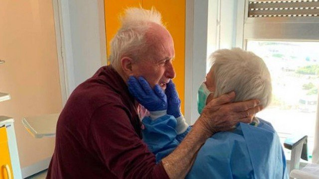

Pesquisadores desenvolvem testes rápidos para detecção de COVID-19.
Pesquisadores no Estado de São Paulo estão desenvolvendo testes rápidos e baratos para ampliar a capacidade de diagnostico. As iniciativas utilizam diferentes estratégias para detectar o vírus ou os anticorpos gerados pelo organismo para combatê-lo. O objetivo é identificar com precisão quem está infectado e também aqueles que já tiveram a doença, mesmo que de forma assintomática, e que, em teoria, estariam imunizados.

Casados há 52 anos, idosos na Itália vencem o coronavírus e abraço de reencontro viraliza.
O casal Giorgio e Rosa estão juntos há 52 anos, e até mesmo na luta para se curar de uma doença eles não se desgrudam. Eles se recuperaram no hospital da cidade de Cremona, na Itália, mas permaneceram em quartos diferentes.Veneza, na Itália, começa a retomar atividades após fechamento total por pandemia de novo coronavírus.
Os canais cristalinos e limpos e o silêncio das ruas surpreenderam os moradores de Veneza, na Itália, que nesta semana começaram a circular após a abertura de algumas lojas depois de mais de um mês de confinamento total por causa da pandemia de novo corona vírus.